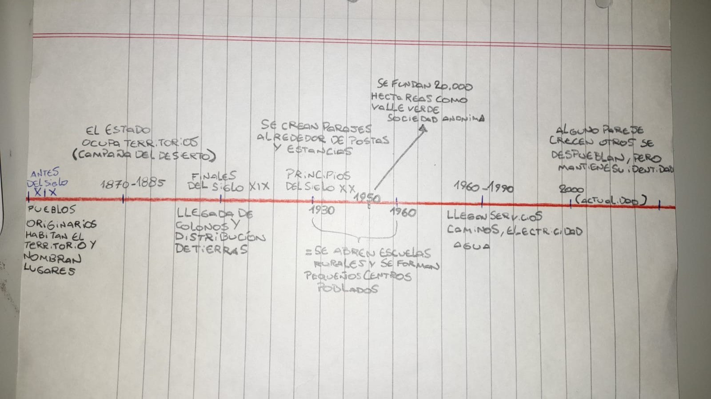

¿Cómo llegó a ser lo que es el lugar donde vivimos?
En el taller «La identidad local y la historia del paraje», cada año aportó una parte de la historia de su lugar. A quinto año le tocó conectar lo que pasó en el paraje con la historia de la Argentina y de la Patagonia. Esto es lo que trabajó Lautaro sobre Valle Verde.
Mi pueblo
Mi pueblo, Valle Verde, está sobre la ruta provincial 57, a 60 kilómetros de Catriel, en Río Negro. Tiene entre 100 y 150 habitantes y es un lugar muy tranquilo, donde los vecinos tienen una muy buena convivencia.
Los días de verano y primavera son muy agradables y llegan a los 37 °C, pero en invierno hay noches de heladas de alrededor de 5 °C bajo cero. Aun así, es un lugar muy lindo para conocer.
Su comercio principal es la venta de ganado vacuno, porcino y caprino, y también de verduras como cebollas y papas. La economía se basa además en grandes plantaciones de alfalfa para hacer forraje para los animales.
La historia grande y la del paraje
La historia de los parajes está directamente relacionada con procesos históricos más amplios de la Argentina y la Patagonia. Por ejemplo, muchos parajes surgieron o se desarrollaron durante la Campaña al Desierto, cuando el Estado buscó ocupar y controlar territorios.
Luego, las políticas de tierra y colonización impulsaron la llegada de pobladores, favoreciendo la formación de comunidades rurales. También, decisiones del Estado como la construcción de escuelas, caminos y servicios (electricidad, agua) fueron claves para el crecimiento y la permanencia de las familias en esos lugares.
La línea de tiempo

- Antes del siglo XIX: los pueblos originarios habitan el territorio y nombran los lugares.
- 1870-1885: el Estado ocupa los territorios (Campaña del Desierto).
- Finales del siglo XIX: llegan los colonos y se distribuyen las tierras.
- Principios del siglo XX: se crean parajes alrededor de postas y estancias.
- 1930-1960: se abren escuelas rurales y se forman pequeños centros poblados.
- 1950: se fundan 20.000 hectáreas como Valle Verde Sociedad Anónima.
- 1960-1990: llegan los servicios: caminos, electricidad y agua.
- 2000 hasta hoy: algunos parajes crecen y otros se despueblan, pero mantienen su identidad.
La Fiesta de la Tradición
La identidad del paraje también se vive en sus fiestas. Así se celebró la Fiesta de la Tradición en Valle Verde, con el desfile a caballo y las banderas por las calles del pueblo.
Fiesta de la Tradición en Valle Verde
Para seguir investigando
El taller dejó preguntas para hacer en cada paraje: ¿quién es la persona que más sabe sobre su historia, y ya la entrevistaron? ¿Hay actas, fotos o registros de la escuela guardados? ¿Qué historia del paraje querríamos que conozcan nuestros hijos y nietos?